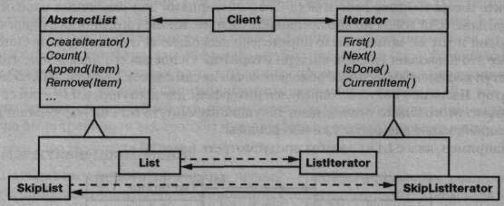

Паттерн Iterator
Название и классификация паттерна
Итератор – паттерн поведения объектов.
Назначение
Предоставляет способ последовательного доступа ко всем элементам составного объекта, не раскрывая его внутреннего представления.
Известен также под именем
Cursor (курсор).
Мотивация
Составной объект, скажем список, должен предоставлять способ доступа к своим элементам, не раскрывая их внутреннюю структуру. Более того, иногда требуется обходить список по-разному, в зависимости от решаемой задачи. Но вряд ли вы захотите засорять интерфейс класса List операциями для различных вариантов обхода, даже если все их можно предвидеть заранее. Кроме того, иногда нужно, чтобы в один и тот же момент было определено несколько активных обходов списка.
Все это позволяет сделать паттерн итератор. Основная его идея в том, чтобы за доступ к элементам и способ обхода отвечал не сам список, а отдельный объектитератор. В классе Iterator определен интерфейс для доступа к элементам списка. Объект этого класса отслеживает текущий элемент, то есть он располагает информацией, какие элементы уже посещались.
Например, класс List мог бы предусмотреть класс Listlterator.
Прежде чем создавать экземпляр класса Listlterator, необходимо иметь список, подлежащий обходу. С объектом L i s t l t e r a t o r вы можете последовательно посетить все элементы списка. Операция Current It em возвращает текущий элемент списка, операция First инициализирует текущий элемент первым элементом списка, Next делает текущим следующий элемент, a IsDone проверяет, не оказались ли мы за последним элементом, если да, то обход завершен.
Отделение механизма обхода от объекта List позволяет определять итераторы, реализующие различные стратегии обхода, не перечисляя их в интерфейсе класса List. Например, FilteringListlterator мог бы предоставлять доступ только к тем элементам, которые удовлетворяют условиям фильтрации.
Заметим: между итератором и списком имеется тесная связь, клиент должен иметь информацию, что он обходит именно список, а не какую-то другую агрегированную структуру. Поэтому клиент привязан к конкретному способу агрегирования. Было бы лучше, если бы мы могли изменять класс агрегата, не трогая код клиента. Это можно сделать, обобщив концепцию итератора и рассмотрев полиморфную итерацию.
Например, предположим, что у нас есть еще класс SkipList, реализующий список. Список с пропусками (skiplist) [Pug90] - это вероятностная структура данных, по характеристикам напоминающая сбалансированное дерево. Нам нужно научиться писать код, способный работать с объектами как класса List, так и класса SkipList.
Определим класс AbstractList, в котором объявлен общий интерфейс для манипулирования списками. Еще нам понадобится абстрактный класс Iterator, определяющий общий интерфейс итерации. Затем мы смогли бы определить конкретные подклассы класса Iterator для различных реализаций списка. В результате механизм итерации оказывается не зависящим от конкретных агрегированных классов.
Остается понять, как создается итератор. Поскольку мы хотим написать код, не зависящий от конкретных подклассов List, то нельзя просто инстанцировать конкретный класс. Вместо этого мы поручим самим объектам-спискам создавать для себя подходящие итераторы, вот почему потребуется операция Createlterator, посредством которой клиенты смогут запрашивать объект-итератор.
Createlterator - это пример использования паттерна фабричный метод. В данном случае он служит для того, чтобы клиент мог запросить у объекта-списка подходящий итератор. Применение фабричного метода приводит к появлению двух иерархий классов - одной для списков, другой для итераторов. Фабричный метод Createlterator «связывает» эти две иерархии.
Применимость
Используйте паттерн итератор:
- для доступа к содержимому агрегированных объектов без раскрытия их внутреннего представления;
- для поддержки нескольких активных обходов одного и того же агрегированного объекта;
- для предоставления единообразного интерфейса с целью обхода различных агрегированных структур (то есть для поддержки полиморфной итерации).
Структура
Участники
-
Iterator – итератор:
- определяет интерфейс для доступа и обхода элементов;
-
Concretelterator – конкретный итератор:
- реализует интерфейс класса Iterator;
- следит за текущей позицией при обходе агрегата;
-
Aggregate – агрегат:
- определяет интерфейс для создания объекта-итератора;
-
ConcreteAggregate – конкретный агрегат:
- реализует интерфейс создания итератора и возвращает экземпляр подходящего класса Concretelterator.
Отношения
Concretelterator отслеживает текущий объект в агрегате и может вычислить идущий за ним.
Результаты
У паттерна итератор есть следующие важные особенности:
- поддерживает различные виды обхода агрегата. Сложные агрегаты можно обходить по-разному. Например, для генерации кода и семантических проверок нужно обходить деревья синтаксического разбора. Генератор кода может об ходить дерево во внутреннем или прямом порядке. Итераторы упрощают изменение алгоритма обхода - достаточно просто заменить один экземпляр итератора другим. Для поддержки новых видов обхода можно определить и подклассы класса Iterator ;
- итераторы упрощают интерфейс класса Aggregate. Наличие интерфейса для обхода в классе Iterator делает излишним дублирование этого интерфейса в классе Aggregate. Тем самым интерфейс агрегата упрощается;
- одновременно для данного агрегата может быть активно несколько обходов. Итератор следит за инкапсулированным в нем самом состоянием обхода. Поэтому одновременно разрешается осуществлять несколько обходов агрегата.
Реализация
Существует множество вариантов реализации итератора. Ниже перечислены наиболее употребительные. Решение о том, какой способ выбрать, часто зависит от управляющих структур, поддерживаемых языком программирования. Некоторые языки (например, CLU [LG86]) даже поддерживают данный паттерн напрямую.
- какой участник управляет итерацией. Важнейший вопрос состоит в том, что управляет итерацией: сам итератор или клиент, который им пользуется. Если итерацией управляет клиент, то итератор называется внешним, в противном случае – внутренним. Клиенты, применяющие внешний итератор, должны явно запрашивать у итератора следующий элемент, чтобы двигаться дальше по агрегату. Напротив, в случае внутреннего итератора клиент передает итератору некоторую операцию, а итератор уже сам применяет эту операцию к каждому посещенному во время обхода элементу агрегата. Внешние итераторы обладают большей гибкостью, чем внутренние. Например, сравнить две коллекции на равенство с помощью внешнего итератора очень легко, а с помощью внутреннего – практически невозможно. Слабые стороны внутренних итераторов наиболее отчетливо проявляются в таких языках, как C++, где нет анонимных функций, замыканий (closure) и продолжений (continuation), как в Smalltalk или CLOS. Но, с другой стороны, внутренние итераторы проще в использовании, поскольку они вместо вас определяют логику обхода;
- что определяет алгоритм обхода. Алгоритм обхода можно определить не только в итераторе. Его может определить сам агрегат и использовать итератор только для хранения состояния итерации. Такого рода итератор мы называем курсором, поскольку он всего лишь указывает на текущую позицию в агрегате. Клиент вызывает операцию Next агрегата, передавая ей курсор в качестве аргумента. Операция же Next изменяет состояние курсора. Если за алгоритм обхода отвечает итератор, то для одного и того же агрега та можно использовать разные алгоритмы итерации, и, кроме того, проще применить один алгоритм к разным агрегатам. С другой стороны, алгорит му обхода может понадобиться доступ к закрытым переменным агрегата. Если это так, то перенос алгоритма в итератор нарушает инкапсуляцию аг регата;
-
насколько итератор устойчив. Модификация агрегата в то время, как со вершается его обход, может оказаться опасной. Если при этом добавляются или удаляются элементы, то не исключено, что некоторый элемент будет по сещен дважды или вообще ни разу. Простое решение - скопировать агрегат и обходить копию, но обычно это слишком дорого.
Устойчивый итератор (robust) гарантирует, что ни вставки, на удаления не помешают обходу, причем достигается это без копирования агрегата. Есть много способов реализации устойчивых итераторов. В большинстве из них итератор регистрируется в агрегате. При вставке или удалении агрегат либо подправляет внутреннее состояние всех созданных им итераторов, либо организует внутреннюю информацию так, чтобы обход выполнялся правильно.
В работе Томаса Кофлера (Thomas Kofler) [Kof93] приводится подробное обсуждение реализации итераторов в каркасе ЕТ++. Роберт Мюррей (Robert Murray) [МигЭЗ] описывает реализацию устойчивых итераторов для класса L i s t из библиотеки USL Standard Components; - дополнительные операции итератора. Минимальный интерфейс класса Iterator состоит из операций First, Next, IsDone и Currentltem. Но могут оказаться полезными и некоторые дополнительные операции. Например, упорядоченные агрегаты могут предоставлять операцию Previous, позиционирующую итератор на предыдущий элемент. Для отсортированных или индексированных коллекций интерес представляет операция SkipTo, которая позиционирует итератор на объект, удовлетворяющий некоторому критерию;
-
использование полиморфных итераторов в C++. С полиморфными итерато рами связаны определенные накладные расходы. Необходимо, чтобы объект итератор создавался в динамической памяти фабричным методом. Поэтому использовать их стоит только тогда, когда есть необходимость в полимор физме. В противном случае применяйте конкретные итераторы, которые вполне можно распределять в стеке.
У полиморфных итераторов есть и еще один недостаток: за их удаление отвечает клиент. Здесь открывается большой простор для ошибок, так как очень легко забыть об освобождении распределенного из кучи объекта-итератора после завершения работы с ним. Особенно велика вероятность этого, если у операции есть несколько точек выхода. А в случае возбуждения исключения память, занимаемая объектом-итератором, вообще никогда не будет освобождена.
Эту ситуацию помогает исправить паттерн заместитель. Вместо настоящего итератора мы используем его заместителя, память для которого выделена в стеке. Заместитель уничтожает итератор в своем деструкторе. Поэтому, как только заместитель выходит из области действия, вместе с ним уничтожается и настоящий итератор. Заместитель гарантирует выполнение надлежащей очистки даже при возникновении исключений. Это пример применения хорошо известной в C++ техники, которая называется «выделение ресурса - это инициализация» [ES90]. В разделе «Пример кода» она проиллюстрирована подробнее; -
итераторы могут иметь привилегированный доступ. Итератор можно рассматривать как расширение создавший его агрегат. Итератор и агрегат тесно связаны. В C++ такое отношение можно выразить, сделав итератор другом своего агрегата. Тогда не нужно определять в агрегате операции, единственная цель которых - позволить итераторам эффективно выполнить обход.
Однако наличие такого привилегированного доступа может затруднить определение новых способов обхода, так как потребуется изменить интерфейс агрегата, добавив в него нового друга. Для того чтобы решить эту проблему, класс Iterator может включать защищенные операции для доступа к важным, но не являющимся открытыми членам агрегата. Подклассы класса Iterator (и только его подклассы) могут воспользоваться этими защищенными операциями для получения привилегированного доступа к агрегату; -
итераторы для составных объектов. Реализовать внешние агрегаты для рекурсивно агрегированных структур (таких, например, которые возникают в результате применения паттерна компоновщик) может оказаться затруднительно, поскольку описание положения в структуре иногда охватывает несколько уровней вложенности. Поэтому, чтобы отследить позицию текущего объекта, внешний итератор должен хранить путь через составной объект Composite. Иногда проще воспользоваться внутренним итератором. Он может запомнить текущую позицию, рекурсивно вызывая себя самого, так что путь будет неявно храниться в стеке вызовов.
Если узлы составного объекта Composite имеют интерфейс для перемещения от узла к его братьям, родителям и потомкам, то лучшее решение дает итератор курсорного типа. Курсору нужно следить только за текущим узлом, а для обхода составного объекта он может положиться на интерфейс этого узла.
Составные объекты часто нужно обходить несколькими способами. Самые распространенные - это обход в прямом, обратном и внутреннем порядке, а также обход в ширину. Каждый вид обхода можно поддержать отдельным итератором; - пустые итераторы. Пустой итератор Nulllterator - это вырожденный итератор, полезный при обработке граничных условий. По определению, N u l l l t e r a t o r всегда считает, что обход завершен, то есть его операция IsDone неизменно возвращает истину. Применение пустого итератора может упростить обход древовидных структур (например, объектов Composite). В каждой точке обхода мы запрашиваем у текущего элемента итератор для его потомков. Элементы-агрегаты, как обычно, возвращают конкретный итератор. Но листовые элементы возвращают экземпляр Nulllterator. Это позволяет реализовать обход всей структуры единообразно.
Пример кода
Рассмотрим простой класс списка List, входящего в нашу базовую библиотеку (см. приложение С) и две реализации класса Iterator: одну для обхода списка от начала к концу, а другую - от конца к началу (в базовой библиотеке поддержан только первый способ). Затем мы покажем, как пользоваться этими итераторами и как избежать зависимости от конкретной реализации. После этого изменим дизайн, дабы гарантировать корректное удаление итераторов. А в последнем примере мы проиллюстрируем внутренний итератор и сравним его с внешним.
-
интерфейсы классов List и Iterator. Сначала обсудим ту часть интерфейса класса List, которая имеет отношение к реализации итераторов. Полный интерфейс см. в приложении С:
template <class Item> class List { public: List(long size = DEFAULT_LIST_CAPACITY); long Count() const; Item& Get(long index) const; // ... };
В открытом интерфейсе класса List предусмотрен эффективный способ поддержки итераций. Его достаточно для реализации обоих видов обхода. Поэтому нет необходимости предоставлять итераторам привилегированный доступ к внутренней структуре данных. Иными словами, классы итераторов не являются друзьями класса List. Определим абстрактный класс Iterator, в котором будет объявлен интерфейс итератора:template <class Item> class Iterator { public: virtual void First() = 0; virtual void Next() = 0; virtual bool IsDoneO const = 0; virtual Item Currentltemf) const = 0; protected: Iterator)); };
-
реализации подклассов класса Iterator. Класс List Iterator является подклассом Iterator:
template <class Item> class Listlterator : public Iterator<Item> { public: Listlterator(const List<Item>* aList); virtual void First(); virtual void Next(); virtual bool IsDoneO const; virtual Item CurrentltemO const; private: const List<Item>* _list; long _current; };
Реализация класса Listlterator не вызывает затруднений. В нем хранится экземпляр List и индекс _current, указывающий текущую позицию в списке:template <class Item> Listlterator<ltem>::Listlterator ( const List<Item>* aList ) : _list(aList), _current(0) { }
Операция First позиционирует итератор на первый элемент списка:template <class Item> void Listlterator<ltem>::First () { _current = 0; }
Операция Next делает текущим следующий элемент:template <class Item> void Listlterator<ltem>::Next () { _current++; }
Операция IsDone проверяет, относится ли индекс к элементу внутри списка:template <class Item> bool Listlterator<ltem>::IsDone () const { return _current >= _ l i s t - > C o u n t ( ) ; }
Наконец, операция Current Item возвращает элемент, соответствующий текущему индексу. Если итерация уже завершилась, то мы возбуждаем исключение IteratorOutOfBounds:template <class Item> Item Listlterator<ltem>::CurrentItem () const { if (IsDoneO) { throw IteratorOutOfBounds; } return _list->Get(_current); }
Реализация обратного итератора ReverseListlterator аналогична рассмотренной, только его операция First позиционирует _current на конец списка, а операция Next делает текущим предыдущий элемент; -
использование итераторов. Предположим, что имеется список объектов Employee (служащий) и мы хотели бы напечатать информацию обо всех содержащихся в нем служащих. Класс Employee поддерживает печать с помощью операции Print. Для печати списка определим операцию PrintEmployees, принимающую в качестве аргумента итератор. Она пользуется этим итератором для обхода и печати содержимого списка:
void PrintEmployees (Iterator<Employee*>& i) { for (i . First (); !i. IsDone(); i. NextO) { i.Current!tem()->Print(); } }
Поскольку у нас есть итераторы для обхода списка от начала к концу и от конца к началу, то мы можем повторно воспользоваться той же самой операцией для печати списка служащих в обоих направлениях:List<Employee*>* employees; // ... ListIterator<Employee*> forward (employees) ; ReverseListIterator<Employee*> backward (employees) ; PrintEmployees (forward) ; PrintEmployees (backward) ,-
-
как избежать зависимости от конкретной реализации списка. Рассмотрим, как повлияла бы на код итератора реализация класса List в виде списка с пропусками. Подкласс SkipList класса List должен предоставить итератор SkipList Iterator, реализующий интерфейс класса Iterator. Для эффективной реализации итерации у SkipListlterator должен быть не только индекс. Но поскольку SkipListlterator согласуется с интерфейсом класса Iterator, то операцию PrintEmployees можно использовать и тогда, когда служащие хранятся в списке типа SkipList:
SkipList<Employee*>* employees; // ... SkipListIterator<Employee*> iterator(employees); PrintEmployees(iterator);
Оптимальное решение в данной ситуации - вообще не привязываться к конкретной реализации списка, например SkipList. Мы можем рассмотреть абстрактный класс AbstractList ради стандартизации интерфейса списка для различных реализаций. Тогда и List, и SkipList окажутся подклассами AbstractList.
Для поддержки полиморфной итерации класс AbstractList определяет фабричный метод Createlterator, замещаемый в подклассах, которые возвращают подходящий для себя итератор:template <class Item> class AbstractList { public: virtual Iterator<Item>* Createlterator() const = 0; // ... };
Альтернативный вариант – определение общего подмешиваемого класса Traversable, в котором определен интерфейс для создания итератора. Для поддержки полиморфных итераций агрегированные классы могут являться потомками Traversable.
Класс List замещает Createlterator, для того чтобы возвратить объект Listlterator:template <class Item> Iterator<Item>* List<Item>::CreateIterator () const { return new Listlterator<ltem>(this); }
Теперь мы можем написать код для печати служащих, который не будет зависеть от конкретного представления списка:// мы знаем только, что существует класс AbstractList AbstractList<Employee*>* employees; II ... Iterator<Employee*>* iterator = employees->Create!terator(); PrintEmployees(*iterator); delete iterator;
-
как гарантировать удаление итераторов? Заметим, что Createlterator возвращает только что созданный в динамической памяти объект-итератор. Ответственность за его удаление лежит на нас. Если мы забудем это сделать, то возникнет утечка памяти. Для того чтобы упростить задачу клиентам, мы введем класс IteratorPtr, который замещает итератор. Он уничтожит объект Iterator при выходе из области определения.
Объект класса IteratorPtr всегда распределяется в стеке. C++ автома тически вызовет его деструктор, который уничтожит реальный итератор. В классе IteratorPtr операторы operator-> и operator* перегруже ны так, что объект этого класса можно рассматривать как указатель на ите ратор. Функции-члены класса IteratorPtr встраиваются, поэтому при их вызове накладных расходов нет:template <class Item> class IteratorPtr { public: IteratorPtr(Iterator<Item>* i): _i(i) { } ~IteratorPtr() { delete _i; } Iterator<Item>* operator->() { return _i; } Iterator<Item>& operator*!) { return *_i; } private: // запретить копирование и присваивание, чтобы // избежать многократных удалений _i IteratorPtr(const IteratorPtrk); IteratorPtrk operator=(const IteratorPtrk); private: Iterator<Item>* _i; };
IteratorPtr позволяет упростить код печати:AbstractList<Employee*>* employees; // ... IteratorPtr<Employee*> iterator (employees->Create!terator () ) ; PrintEmployees (*iterator) ;
-
внутренний Listlterator. В последнем примере рассмотрим, как можно было бы реализовать внутренний или пассивный класс Listlterator. Теперь итератор сам управляет итерацией и применяет к каждому элементу некоторую операцию.
Нерешенным остается вопрос о том, как параметризовать итератор той операцией, которую мы хотим применить к каждому элементу. C++ не поддерживает ни анонимных функций, ни замыканий, которые предусмотрены для этой цели в других языках. Существует, по крайней мере, два варианта: передать указатель на функцию (глобальную или статическую) или породить подклассы. В первом случае итератор вызывает переданную ему операцию в каждой точке обхода. Во втором случае итератор вызывает операцию, которая замещена в подклассе и обеспечивает нужное поведение.
Ни один из вариантов не идеален. Часто во время обхода нужно аккумулировать некоторую информацию, а функции для этого плохо подходят — пришлось бы использовать статические переменные для запоминания состояния. Подкласс класса Iterator предоставляет удобное место для хранения аккумулированного состояния – переменную экземпляра. Но создавать подкласс для каждого вида обхода слишком трудоемко.
Назовем внутренний итератор ListTraverser:template <class Item> class ListTraverser { public: ListTraverser (List<Item>* aList); bool Traverse (); protected: virtual bool Processltem(const Item&) = 0; private: Listlterator<ltem> „iterator; };
ListTraverser принимает экземпляр List в качестве параметра. Внутри себя он использует внешний итератор List Iterator для выполнения обхода. Операция Traverse начинает обход и вызывает для каждого элемента операцию Processltem. Внутренний итератор может закончить обход, вернув f a l s e из Processltem. Traverse сообщает о преждевременном завершении обхода:template <class Item> ListTraverser<Item>::ListTraverser ( List<Item>* aList ) : _iterator(aList) { } template <class Item> bool ListTraverser<Item>::Traverse () { bool result = false; for ( _iterator.First(); !_iterator.IsDone(); _iterator.Next() ) { result = ProcessItem(_iterator.CurrentItem()); if (result == false) { break; } } return result; }
Воспользуемся итератором ListTraverser для печати первых десяти служащих из списка. С этой целью надо породить подкласс от ListTraverser и определить в нем операцию Process Item. Подсчитывать число напечатанных служащих будем в переменной экземпляра _count:class PrintNEmployees : public ListTraverser<Employee*> { public: PrintNEmployees(List<Employee*>* aList, int n) : ListTraverser<Employee*>(aList), _total(n), _count(0) { } protected: bool ProcessltemtEmployee* const&); private: int _total; int _count; }; bool PrintNEmployees::ProcessItem (Employee* const& e) { _count++; e->Print(); return _count < _total; }
Вот как PrintNEmployees печатает первые 10 служащих:List<Employee*>* employees; // ... PrintNEmployees pa(employees, 10); pa.Traverse();
Обратите внимание, что в коде клиента нет цикла итерации. Всю логику обхода можно использовать повторно. В этом и состоит основное преимущество внутреннего итератора. Работы, правда, немного больше, чем для внешнего итератора, так как нужно определять новый класс. Сравните с программой, где применяется внешний итератор:ListIterator<Employee*> i(employees); int count = 0; for (i. First (); !i.IsDone() ; i.NextO) { count++; i.Currentltemf)->Print(); if (count >= 10) { break; } }
Внутренние итераторы могут инкапсулировать разные виды итераций. Например, FilteringListTraverser инкапсулирует итерацию, при которой обрабатываются лишь элементы, удовлетворяющие определенному условию:template <class Item> class FilteringListTraverser { public: FilteringListTraverser (List<Item>* aList) ; bool Traverse ( ) ; protected: virtual bool Processltemfconst Item&) = 0; virtual bool Testltemt const Item&) = 0; private: Listlterator<ltem> _iterator; };
Интерфейс такой же, как у ListTraverser, если не считать новой функции-члена Test Item, которая и реализует проверку условия. В подклассах Test Item замещается для задания конкретного условия. Посредством операции Traverse выясняется, нужно ли продолжать обход, основываясь на результате проверки:template <class Item> void FilteringListTraverser<Item>::Traverse () { bool result = false; for ( _iterator.First(); !_iterator.IsDone(); _iterator-Next() ) { if (TestItem(_iterator.CurrentItem())) { result = ProcessItem(_iterator.CurrentItem()); if (result == false) { break; } } } return result; }
В качестве варианта можно было определить функцию Traverse так, чтобы она сообщала хотя бы об одном встретившемся элементе, который удовлетворяет условию.
Известные применения
Итераторы широко распространены в объектно-ориентированных системах. В том или ином виде они есть в большинстве библиотек коллекций классов.
Вот пример из библиотеки компонентов Грейди Буча [Воо94], популярной библиотеки, поддерживающей классы коллекций. В ней имеется реализация очереди фиксированной (ограниченной) и динамически растущей длины (неограниченной). Интерфейс очереди определен в абстрактном классе Queue. Для поддержки полиморфной итерации по очередям с разной реализацией итератор написан с использованием интерфейса абстрактного класса Queue. Преимущество такого подхода очевидно – отсутствует необходимость в фабричном методе, который запрашивал бы у очереди соответствующий ей итератор. Однако, чтобы итератор можно было реализовать эффективно, интерфейс абстрактного класса Queue должен быть мощным.
В языке Smalltalk необязательно определять итераторы так явно. В стандартных классах коллекций (Bag, Set, Dictionary, OrderedCollection, String и т.д.) определен метод do:, выполняющий функции внутреннего итератора, который принимает блок (то есть замыкание). Каждый элемент коллекции привязывается к локальной переменной в блоке, а затем блок выполняется. Smalltalk также включает набор классов Stream, которые поддерживают похожий на итератор интерфейс. ReadStream - это, по существу, класс Iterator и внешний итератор для всех последовательных коллекций. Для непоследовательных коллекций типа Set и Dictionary нет стандартных итераторов.
Полиморфные итераторы и выполняющие очистку заместители находятся в контейнерных классах ЕТ++ [WGM88]. Курсороподобные итераторы используются в классах каркаса графических редакторов Unidraw [VL90].
В системе ObjectWindows 2.0 [Вог94] имеется иерархия классов итераторов для контейнеров. Контейнеры разных типов можно обходить одним и тем же способом. Синтаксис итераторов в ObjectWindows основан на перегрузке постфиксного оператора инкремента ++ для перехода к следующему элементу.
Родственные паттерны
Компоновщик: итераторы довольно часто применяются для обхода рекурсивных структур, создаваемых компоновщиком.
Фабричный метод: полиморфные итераторы поручают фабричным методам инстанцировать подходящие подклассы класса Iterator.
Итератор может использовать хранитель для сохранения состояния итерации и при этом содержит его внутри себя.